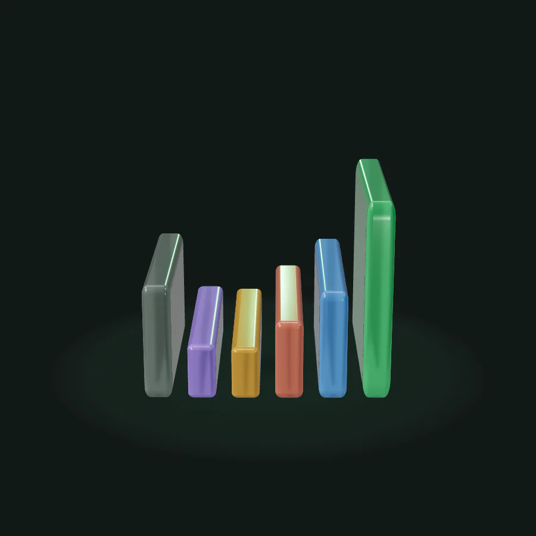

Этап 2 · для всех клиентов
Клиент открывает один счёт вместо нескольких. Деньги на нём разложены по конвертам: под цели, обязательные платежи и свободные траты.
Запас 150 000
Отпуск 46 000
Кредит 23 400
ЖКХ 9 500
Детский сад 12 000
Свободные 59 100
Пример: семья, на счёте 300 000 ₽. Ставка за поведение идёт на запас и цели; платежи и свободные — без процентов.